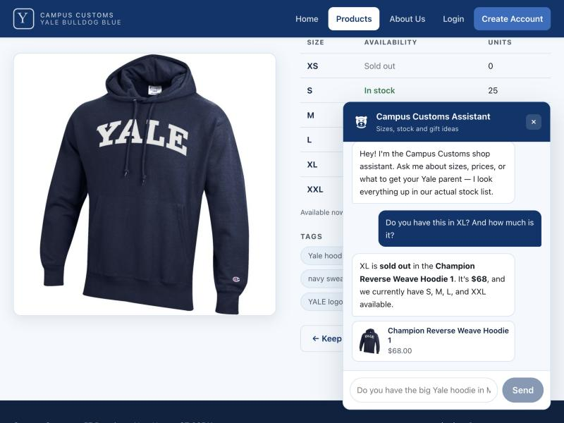
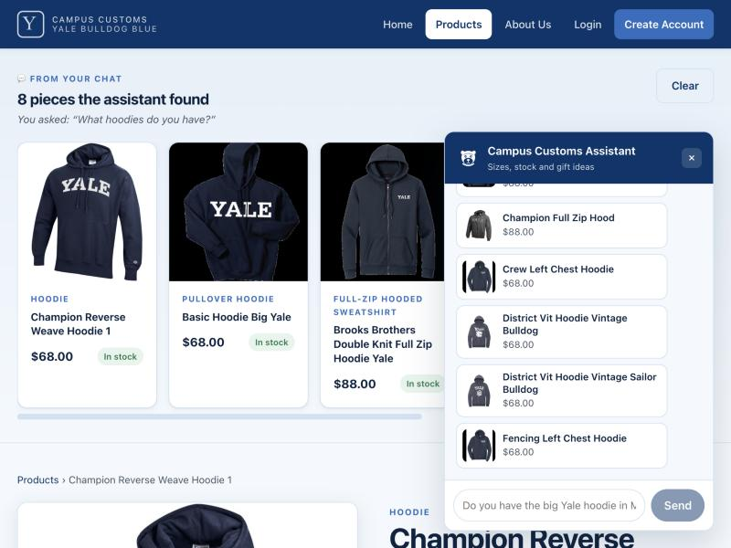
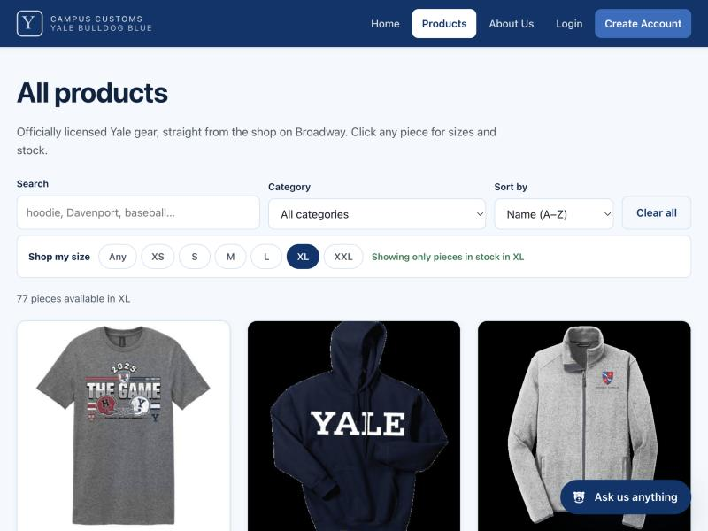
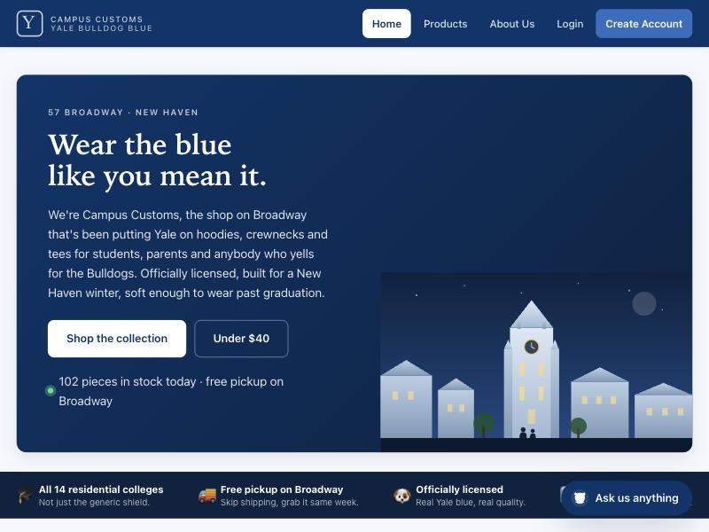
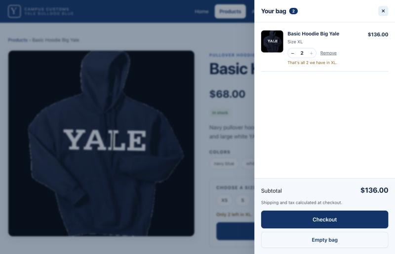

Chat checks real inventory — honest stock and price
On the Champion Reverse Weave Hoodie 1 product page, the shopper asks “Do you have this in XL? And how much is it?”. The assistant answers that XL is sold out, quotes $68, and lists the sizes that genuinely are available. The product page’s own stock table is visible behind the panel showing the same numbers from the database — XS sold out (0 units), S in stock (25).

SELECT size, quantity FROM inventory WHERE product_id='champion-reverse-weave-hoodie-1'
returns XS 0, S 25, M 20, L 20, XL 0, XXL 15,
and price = 68.0. The reply matches exactly — the sold-out size is stated
plainly rather than hedged, and the price is quoted, not estimated.
A category question puts product cards on the page
Asking “What hoodies do you have?” makes the agent search the catalogue, and the matching items appear as product cards in a “From your chat” rail across the top of the site — each with image, name, price and stock badge, captioned with the question that produced them. These are ordinary product cards, so clicking one opens the full detail page.

products in the /api/chat response; the page rendered
8 cards. The cards are built in Python from the tool calls that actually ran, not parsed
out of the model’s text, so they cannot disagree with the reply.
“Shop my size” — only what you can actually buy
Selecting XL in the size chip row filters the grid to the pieces actually
in stock in XL, drops the count from 102 to 77, and confirms it with a
green note. The choice is stored in the URL (/products?size=XL), so it
survives a refresh and can be shared.

SELECT COUNT(*) FROM inventory WHERE size='XL' AND quantity>0 returns
77 — exactly the number shown. 145 of 612 size rows are at zero stock, so
this filter removes a real dead end rather than a hypothetical one.
The storefront
The home page: Times New Roman “Y” mark, serif headlines, an original Harkness Tower illustration at dusk with two figures walking through, a live in-stock count, and the value strip explaining why to shop here rather than the bookstore.

Add to bag — quantities capped at real stock
The Basic Hoodie Big Yale has exactly 2 units left in XL. The product
page warns “Only 2 left in XL”, and after stepping the bag up to 2 the +
control disables and the line explains “That’s all 2 we have in XL.” Subtotal reads
$136.00 — 2 × $68.00.

SELECT quantity FROM inventory WHERE product_id='basic-hoodie-big-yale' AND size='XL'
returns 2. The bag cannot be pushed past it, sold-out sizes cannot be
selected at all, and the basket is restored from localStorage after a reload.